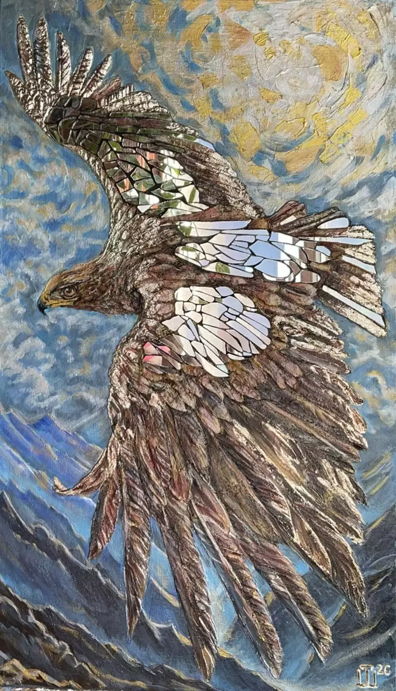

Парящий орел — фундаментальный символ независимости, силы духа и безграничного полета
43х75 см.
43х75 см, холст на арт-борде, текстурная паста, зеркальные элементы, акрил, зеркальная поталь, лак. Арт-объект представляет собой сложную монументальную работу, выполненную на стыке живописи, скульптуры и декоративного искусства.Оперение орла, мощные изгибы крыльев, рельеф головы, а также фактурный диск солнца вылеплены вручную с использованием структурной пасты. Высокий скульптурный рельеф создает осязаемую анатомическую точность и придает птице физическую мощь и объем. Зеркальная мозаика: В верхнее оперение крыльев инкрустирована мозаика из осколков настоящих зеркал разной формы. Этот прием создает уникальный оптический эффект: при движении зрителя мимо картины крылья птицы начинают оживать, «вспыхивать» и ловить блики света, отражая пространство комнаты.
Название "Грани свободы" безупречно раскрывает философский и визуальный сюжет картины. Парящий орел — фундаментальный символ независимости, силы духа и безграничного полета. Он парит над острыми пиками заснеженных гор, устремляясь к ослепительному солнцу. Слово «Грани» в названии обыгрывается буквально и метафорически через зеркальные элементы в крыльях птицы. Орел словно соткан из сотен сверкающих граней, которые отражают окружающий мир — небо, свет и самого зрителя. Свобода здесь показана не как статичное состояние, а как многогранное, динамичное явление, способное меняться, преломлять реальность и сиять вопреки любым преградам. Это манифест внутренней силы и стремления к вершинам.